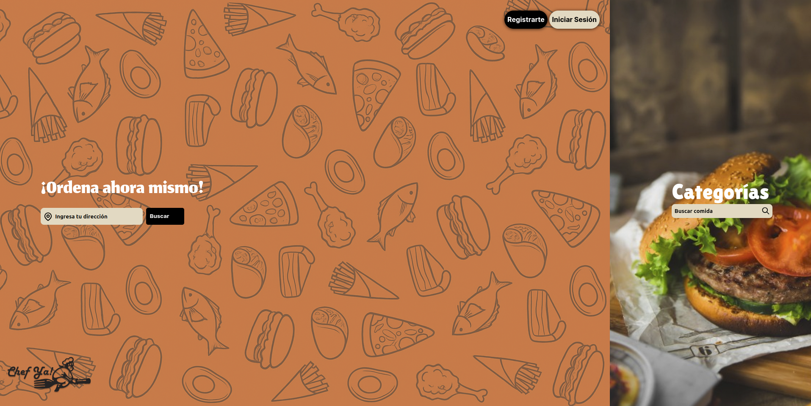
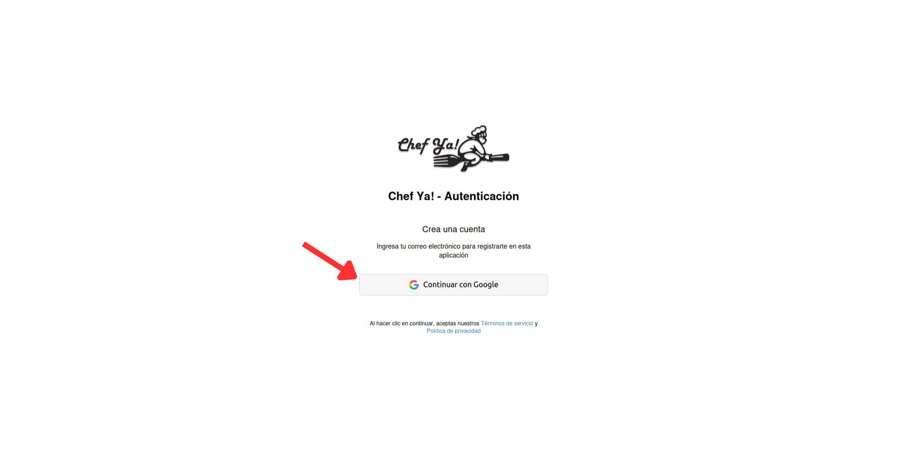
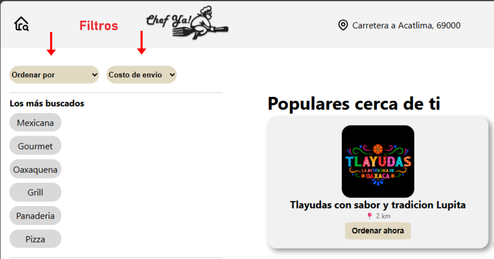
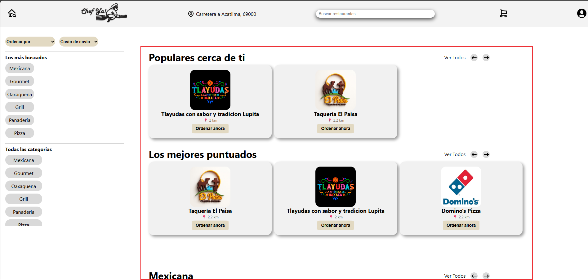
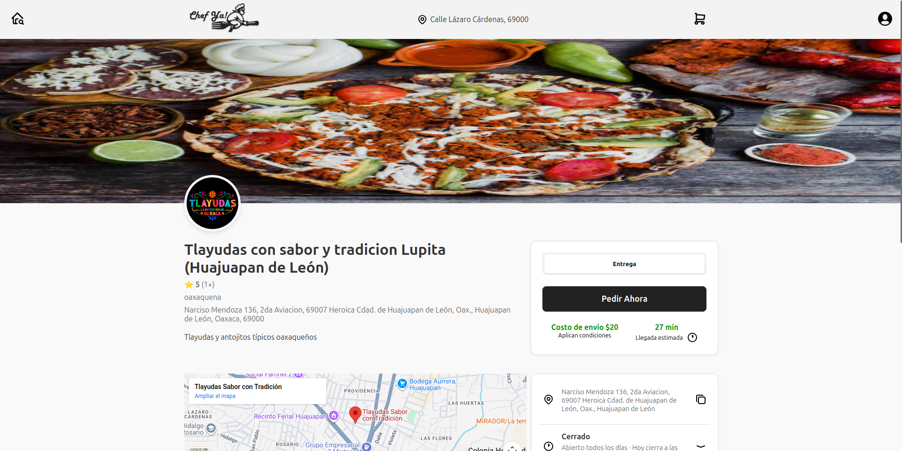
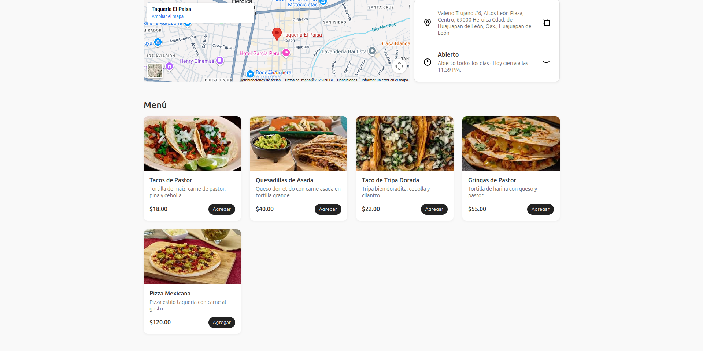
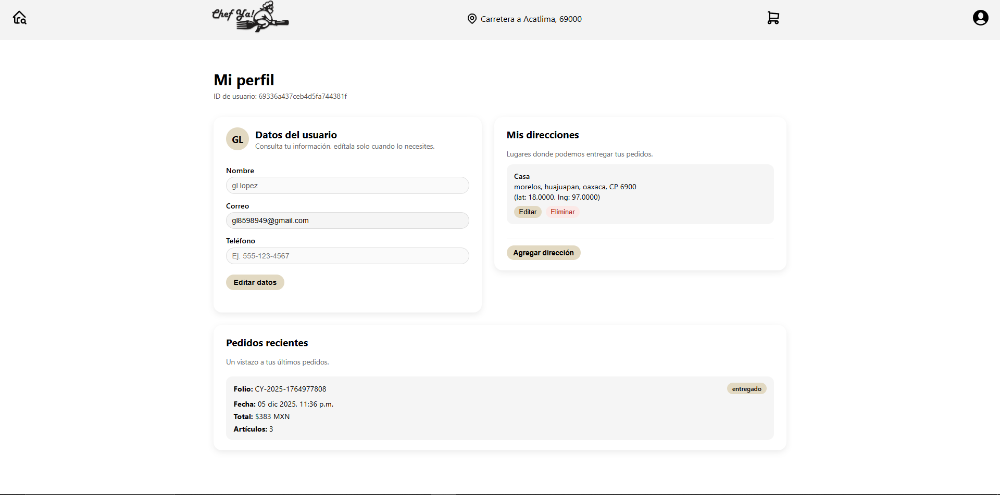

Bienvenido
Chef Ya! – Guía de usuario
Esta página resume los pasos que se muestran en el video: cómo entrar a Chef Ya, navegar por la página, buscar restaurantes, armar tu carrito y completar un pedido.
01 · Acceso
Registro e inicio de sesión
Iniciar sesión en Chef Ya es muy sencillo. Solo necesitas una cuenta de Google y acceder a la pantalla de inicio de sesión, a la cual puedes llegar desde la página principal haciendo clic en el botón “Registro” o “Iniciar Sesión”.
- Desde la página principal, haz clic en el botón “Registro” o en “Iniciar Sesión” para ir a la pantalla de inicio de sesión. 
-
En esta pagina presiona el botón
“Continuar con Google” para usar tu cuenta de Google.
 -
Se abrirá una ventana de Google donde podrás elegir entre tus cuentas.
Selecciona la cuenta con la que quieras entrar:
- Si ya habías iniciado sesión antes, accederás directamente a tu cuenta.
- Si es la primera vez, se creará tu cuenta de Chef Ya automáticamente.
02 · Pantalla principal
Página de inicio de Chef Ya
Al ingresar a la plataforma, verás la vista principal diseñada para mostrarte las mejores opciones según tu ubicación. Estos son los componentes clave que encontrarás:
-
Encabezado y Ubicación
En la barra superior aparece tu ubicación detectada automáticamente (ej. "Acatlima 69004"). La página usa esto para mostrarte solo restaurantes dentro de un rango de 20 km.
- Buscador: Escribe aquí para encontrar rápidamente un plato o restaurante.
- Menú de Usuario: Icono para ver tu perfil o cerrar sesión.
-
Filtros de Búsqueda
Justo debajo del encabezado, encontrarás las herramientas para ordenar la lista:
- Ordenar por: Clasifica por calificación, tiempo de entrega o costo.
- Costo de envío: Filtra opciones con envío gratis o económico.
-
Secciones Destacadas
El contenido principal se organiza en carruseles horizontales:
- Populares cerca de ti: Los restaurantes con más pedidos en tu zona.
- Los mejores puntuados: Restaurantes con 4 o 5 estrellas.
- Categorías: Más abajo verás secciones por tipo de comida (Hamburguesas, Mexicana, etc.).
-
Barra Lateral de Navegación
A la izquierda (en versión escritorio) tienes accesos directos:
- Los más buscados: Atajos a lo que más pide la gente.
- Todas las categorías: Lista completa para filtrar la vista principal por antojo específico.




03 · Búsqueda
Buscar restaurantes y productos
Resume lo que se ve en el video cuando usas el buscador: escribir el término, filtros, ordenamiento, y cómo se muestran los resultados.
- Uso del cuadro de búsqueda.
- Filtros por tipo de comida / categoría.
- Cómo seleccionar un restaurante de la lista.
04 · Restaurante
Detalle de restaurante y menú
En la pantalla de detalle de restaurante podrás ver toda la información importante del negocio: nombre, calificación, horario, dirección, métodos de entrega y el menú completo de productos disponibles para pedir.
-
Desde la página principal o el listado de restaurantes, haz clic en el
restaurante que quieras visitar. Se abrirá la pantalla de detalle con:

- Imagen de portada y logotipo del restaurante.
- Nombre del restaurante (por ejemplo: Tlayudas con sabor y tradición Lupita).
- Calificación promedio y número de opiniones.
- Categoría (por ejemplo: oaxaqueña) y una breve descripción.
-
En la parte derecha de la pantalla encontrarás la información para hacer tu pedido:
- Botón principal “Pedir Ahora” que te redirigirá automáticamente al menu del restaurante./li>
- Costo de envío y tiempo estimado de entrega.
- Estado del restaurante (Abierto o Cerrado) y su horario.
- Debajo de la información principal se muestra la dirección completa del restaurante y un mapa para ubicarlo fácilmente. Desde aquí el usuario puede verificar dónde se encuentra el negocio.
-
Más abajo verás el menú del restaurante, donde se listan todos
los productos disponibles:
- Cada producto muestra su nombre, descripción y precio.
- Desde esa vista puedes elegir la cantidad y hacer clic en “Agregar” para incluirlo en tu carrito.
- Repite el proceso para agregar todos los platillos que quieras. Cuando hayas terminado, continúa al flujo de revisión del carrito y pago para finalizar tu pedido.
05 · Pedido y Carrito
Proceso de pedido y confirmación
Paso a paso del flujo de pedido que se ve en el video: dirección, método de pago, confirmación, y qué mensaje aparece al final.
06 · Perfil
Perfil, direcciones e historial
A continuación te mostraremos cómo gestionar tu perfil, donde podrás ver y modificar tus datos, agregar y modificar direcciones, además de ver tu historial de pedidos.
- Desde la pantalla principal o el listado de restaurantes, haz clic en el ícono de usuario que se encuentra en la barra superior derecha. Se abrirá la pantalla de perfil. 
- Para modificar tus datos personales, presta atención al recuadro que está a la izquierda. Da
clic en “Editar datos” y podrás empezar a modificar.
- Una vez terminado el proceso de modificación, da clic en “Guardar cambios” y se te mostrará un mensaje de éxito.
- Por el momento solo podrás modificar tu nombre de usuario y tu teléfono.
- Para agregar una nueva dirección, da clic en el botón “Agregar dirección” y podrás empezar a
modificar.
- Una vez terminado el proceso de modificación, da clic en “Guardar cambios” y se te mostrará un mensaje de éxito.
- Para modificar o eliminar una dirección, simplemente da clic en los botones de editar o
eliminar que aparecen en tus direcciones.
- Para eliminar se te mostrará un mensaje de confirmación.
- Para editar se te desplegará un recuadro como el de “Agregar dirección”.
- También puedes cancelar estas operaciones en caso de que no quieras realizarlas.
- Para ver tu historial de pedidos, simplemente desplázate un poco hacia abajo y podrás ver
todos tus
pedidos.
- Estos datos no pueden ser modificados ni eliminados.
07 · Preguntas frecuentes
Preguntas frecuentes (según el video)
Aquí puedes escribir las preguntas que respondes al final del video o las dudas más comunes que mencionas.
8 · Soporte
Contacto y soporte
Agrega los medios de contacto que mencionas en el video: correo, WhatsApp, redes sociales, etc.
Ejemplo: Si tienes problemas, escríbenos a soporte@chef-ya.site.